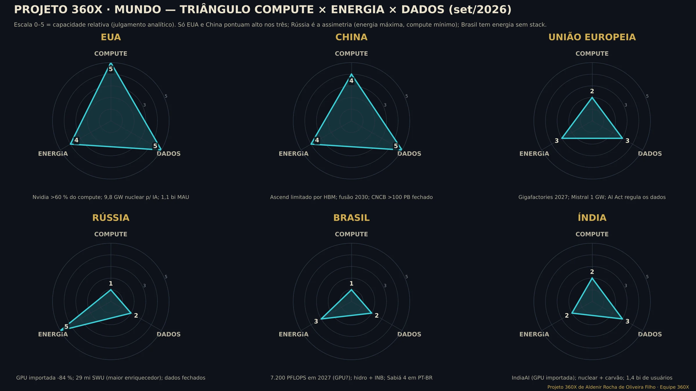
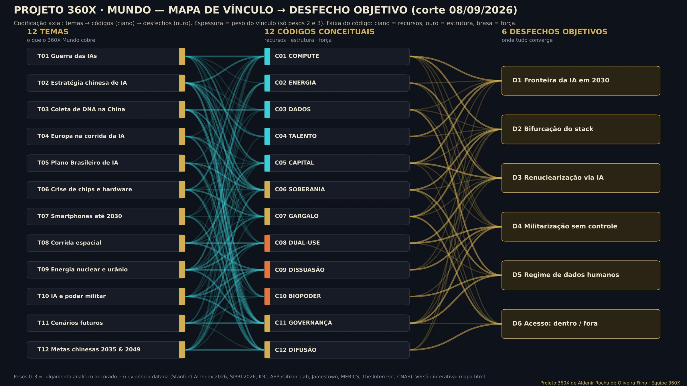
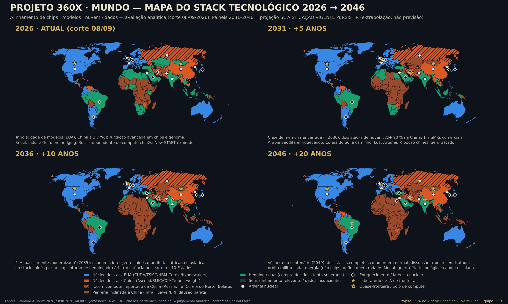

Quem controla a fronteira da IA em 2030
Gap China–EUA de 2,7 %; Nvidia acima de 60 % do compute mundial; investimento privado 23 : 1; nova onda de modelos em out/26.
◆ tripolar americano, China convergindoInteligência artificial, chips, DNA, energia nuclear, espaço e poder militar tratados como um só sistema: três insumos, dois atores, um relógio e um interruptor. Cada fato tem data e fonte; cada leitura separa o verificado do projetado.
Quem controlar o triângulo compute × energia × dados em 2030 define a ordem de 2035; a posição do interruptor de governança define se 2049 será expansão ou escalada.
Chips e memória HBM; gigawatts nucleares para data centers; genomas, biometria e texto.
Os únicos com capacidade nos três insumos; Rússia é a assimetria (energia sem compute).
A agenda chinesa datada de ponta a ponta; os outros reagem a ela.
New START expirado, AIEA sem acesso no Irã, AI Act adiado — e um canal EUA–China para incidentes de IA.

As análises foram escritas em 08/09/2026. Estas são as sentinelas que andaram — com correção onde a leitura daquela data precisa ser ajustada.
| Sentinela | Move | Em 08/09 | Em 17/11/2026 | Estado |
|---|---|---|---|---|
| 🗳️ Eleição no Brasil | D5 · T05 | 1º turno em 04/out sob a tese de deepfake do TSE (fixada em 01/09) | 25/out: Lula reeleito com 51,79 % dos votos válidos (64,3 mi) contra Flávio Bolsonaro (48,21 %); abstenção ≈19,2 % no 2º turno; 2.265 processos levados ao TSE.Fontes: TSE — reeleição e balanço do 2º turno (26/10/2026) | ✅ confirmado |
| 🚀 Starship | D3 · D4 · T08 | Voo 14 previsto para 15/set; reabastecimento orbital nunca demonstrado | 28/set: a Ship 41 atinge órbita (262 × 275 km) e libera 26 satélites Starlink V3; voo encurtado por falha de motor; transferência de propelente ainda não demonstrada.Fontes: Wikipedia — Starship flight 14 | ▲ meio passo |
| ☢️ Irã e AIEA | D3 · D4 · T09 | AIEA sem acesso desde 28/fev; 440,9 kg de urânio a 60 % sem paradeiro | 13/nov: relatório da AIEA — sem informação nem acesso ao estoque altamente enriquecido; a usina IFEP (Isfahan) segue sem localização exata conhecida: “grave preocupação de proliferação”.Fontes: Reuters via WHBL — relatório AIEA (13/11/2026) | ■ crítico |
| 🎯 Anthropic × Pentágono | D4 · D5 · T10 | “Juiz reverteu a designação em ago/26” | Set/26: o Tribunal de Apelações do D.C. (2 × 1) manteve a designação de “risco de cadeia de suprimentos”. Em agosto, o tribunal distrital havia acolhido só 1 das 2 justificativas da empresa.Fontes: Nextgov/FCW — apelação Anthropic × DoD (set/2026) | 🟠 correção |
| 🤝 EUA–China e IA nuclear | D4 · T10 · T11 | Só uma declaração não vinculante (nov/24) sobre controle humano em comando nuclear | 26/set: após cúpula em Washington, EUA e China criam um canal para incidentes de IA e aceleram um memorando de crise militar. 16/nov: a China diz que “não participará de negociações de desarmamento nesta etapa”; encontro Trump–Xi–Putin previsto na APEC (Shenzhen).Fontes: PBS — EUA e China criam canal de segurança de IA (26/09/2026) · Al Jazeera — China e o tratado nuclear (16/11/2026) | ◆ sinal misto |
| 💾 Memória | D6 · T06 | Aperto da DRAM até 2027–2030 conforme o fabricante | TrendForce: DRAM convencional +10–15 % no 4T26 (30/set); PC DRAM +13–18 % no 4T26, notebooks −15,8 % no 3T26 e corte de oferta de PC DRAM planejado para 2027 (11/nov).Fontes: TrendForce — contratos de memória no 4T26 (30/09/2026) · TrendForce — estoques de PCs e memória para 2027 (11/11/2026) | ■ crítico |
| 📱 Dobrável da Apple | D6 · T07 | “iPhone Ultra dobrável” a US$ 2.000–2.500 (rumor) | 09/set: a Apple lança o dobrável como iPhone Duo, a partir de US$ 1.999; pré-venda em 16/out.Fontes: NPR — Apple revela o dobrável iPhone Duo (09/09/2026) · ABC News — dobrável a partir de US$ 1.999 | 🟠 correção |
| 🇨🇳 Chips chineses | D1 · D2 · T02 · T06 | “Produção real de Ascend < 300 mil/ano” | Estimativas divergem: ~810 mil Ascend entregues em 2025 e meta de 600 mil 910C em 2026; a CXMT tem HBM3 com ~50 % de rendimento e só terá HBM3E em 2027.Fontes: The Substrate — cadeia chinesa de chips de IA (jun/2026) | 🟠 correção |
| 🇧🇷 PL 2338 (marco da IA) | D5 · T05 | Plenário da Câmara não confirmado | 27/out: ainda “aguardando parecer do relator” na comissão especial; sem data de votação.Fontes: FerramentaBR — situação do PL 2338 (27/10/2026) · Câmara — ficha de tramitação do PL 2338/2023 | ▲ parado |
| 🤖 Nova onda de modelos | D1 · T01 | GPT-5.6, Claude Fable 5, Gemini 3.1 Deep Think | Out/26: GPT-6.1 Terra, Gemini 4 Argon, Claude Haiku 5.5, DeepSeek-V4.1-Flash (pesos MIT), Kimi K3.1 Pro e pesos abertos do Meta Muse Spark — compilação independente, a conferir nos anúncios oficiais.Fontes: Local AI Zone — atualizações de modelos de out/2026 (compilação independente) | ⚠️ a conferir |
Cada cartão abre o dossiê do tema: evidências datadas, códigos dominantes (ciano = recursos · ouro = estrutura · brasa = força), para onde o tema empurra o sistema e a atualização de 17/11/2026.
Oligopólio tripolar — OpenAI × Anthropic × Google — e a disputa migrou para energia, memória e chips.
Open-weight, eficiência e difusão (AI+); o calcanhar de Aquiles é a memória HBM.
Genoma como recurso estratégico: coleta interna em massa, importação externa, exportação proibida.
Bem regulada e subcapitalizada: a “Suíça” da inferência, não da fronteira.
Soberania declarada, chips indefinidos: o único país operando nos dois stacks.
A memória HBM canibaliza a DRAM comum: memória é o novo petróleo.
O terminal da IA: 2 nm, agentes no aparelho, dobráveis e conexão por satélite.
EUA à frente em tudo, exceto no cronograma; a órbita vira infraestrutura militar.
12.187 ogivas, nenhum tratado — e a IA financiando o novo ciclo do combustível.
Dos dois lados, modelos já planejam ataques; a linha vermelha contratual perdeu na apelação.
Dois eixos, quatro mundos — e sentinelas no lugar de profecias.
A única agenda datada de ponta a ponta: o relógio que sincroniza o resto.
Cada desfecho tem indicador, estado e datas-chave. Sentinelas e as dez cadeias causais completas estão no mapa de vínculo.
Gap China–EUA de 2,7 %; Nvidia acima de 60 % do compute mundial; investimento privado 23 : 1; nova onda de modelos em out/26.
◆ tripolar americano, China convergindoNvidia caiu de ~95 % para ~8 % do mercado chinês; o Brasil opera nos dois stacks (UFRN e Huawei/iFlytek no RJ).
▲ avançada em chips e genoma9,8 GW nucleares contratados por big techs; HALEU financiado; novos países buscando enriquecimento.
● dinheiro indo para reatoresNenhum tratado numérico EUA–Rússia desde fev/26; IA no planejamento de ataques dos dois lados; AIEA sem acesso ao urânio iraniano.
■ linha vermelha perdeu na apelaçãoRepositório genômico estatal chinês acima de 100 PB; BIOSECURE nos EUA; AI Act na Europa; eleição brasileira sob a tese de deepfake do TSE.
▲ assimetria: a China importa e não exportaDRAM +172 % em 2025 e nova alta no 4T26; smartphones −12,9 % em 2026.
■ 2026–27 é o vale
Se a situação vigente persistir: controles de exportação mantidos, nenhum tratado novo, planos chineses executados na taxa histórica e nenhuma guerra entre EUA e China.

A bifurcação vira infraestrutura: dois stacks de nuvem completos, crise de memória perto do fim, primeiros reatores modulares comerciais, Arábia Saudita enriquecendo e o Brasil ainda nos dois stacks.
Dois mundos funcionando: forças armadas chinesas “basicamente modernizadas”, periferias africana e asiática no stack chinês por preço e o cinturão de hedging (Brasil, Índia, Golfo, Turquia) como árbitro.
Véspera do centenário chinês: bifurcação como ordem normal, dissuasão tripolar sem tratado por vinte anos e energia — não chips — decidindo quem roda IA.
Mapa clicável temas → códigos → desfechos, matrizes de intensidade, dez cadeias causais, linha do tempo até 2049, cenários com sentinelas e projeção.
Evidências, códigos dominantes, pegadinhas analíticas e o quadro de atualização de 17/11/2026 para cada tema.
Guerra das IAs, China, Europa, novatas, Brasil, crise da memória, smartphones, corrida espacial e mapa nuclear × IA.
O que o mundo faria com uma parte do dinheiro do medo e do mercado: dias de medo, calendário, cinco cenários e nove paradoxos.
Tese, códigos, matrizes, cadeias causais, desfechos, cenários, projeção 2031/2036/2046 e dossiês compactos.
Teoria fundamentada aplicada à geopolítica. Codificação aberta (≈60 fatos datados) → codificação axial (12 códigos que atravessam temas) → cadeias causais com evidência → codificação seletiva (6 desfechos com indicador, data e sentinelas).
Pesos de 0 a 3 são julgamento analítico: ordenam atenção, não provam causalidade. Classes do mapa (“periferia”, “hedging”) também são avaliações, não dados oficiais.
Uso responsável. Os textos descrevem fatos datados e leituras analíticas sobre Estados, empresas e instituições. Não formulam acusações contra pessoas, não publicam dados pessoais e não constituem serviço investigativo.
Encontrou um erro ou uma fonte melhor? Abra uma issue no repositório. Correções entram com o selo correção e a data.